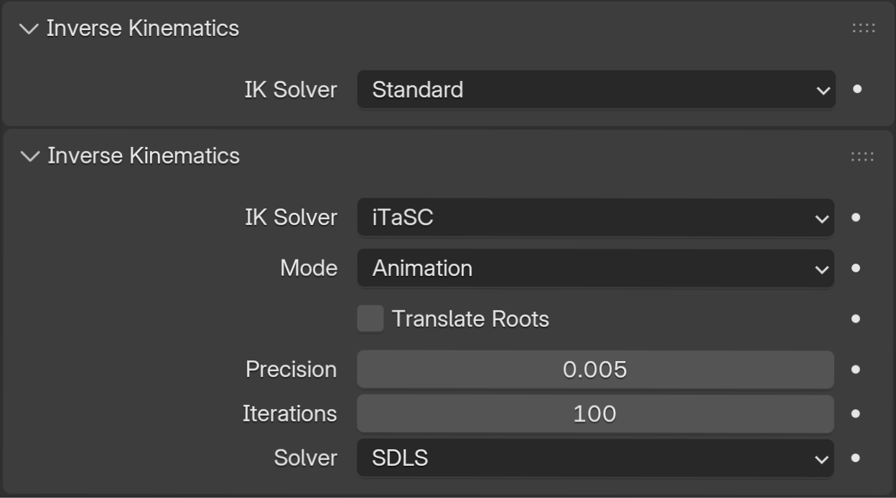
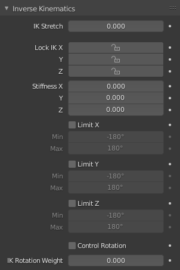
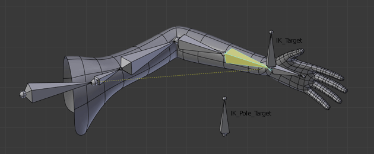

Inverse Kinematics¶
Inverse Kinematics (IK) đơn giản hóa quá trình animation, và giúp tạo ra các animation nâng cao hơn với ít công sức hơn.
Inverse Kinematics cho phép bạn định vị bone cuối cùng trong một chuỗi bone và các bone khác sẽ tự động được định vị. Điều này giống như việc di chuyển ngón tay của ai đó sẽ khiến cánh tay của họ đi theo. Với kỹ thuật tạo pose thông thường, bạn sẽ phải bắt đầu từ bone gốc, rồi thiết lập các bone theo trình tự cho đến khi tới bone đầu mút: khi mỗi bone cha được di chuyển, bone con của nó sẽ kế thừa vị trí và độ xoay của nó. Do đó, việc thực hiện các thay đổi nhỏ chính xác trong pose trở nên khó khăn hơn ở phần cuối chuỗi, vì bạn có thể phải điều chỉnh tất cả các bone cha trước.
Công sức này được tránh hoàn toàn nhờ việc dùng IK.
IK chủ yếu được thực hiện bằng bone constraint, mặc dù cũng có một tính năng đơn giản là Auto IK trong Pose Mode. Cả hai hoạt động theo cùng một phương pháp nhưng constraint cung cấp nhiều tùy chọn và khả năng kiểm soát hơn. Vui lòng tham khảo các trang sau để biết chi tiết về các constraint này:
Panel IK của Armature¶
Tham khảo
- Mode:
Pose Mode
- Panel:
Panel này được dùng để chọn loại IK Solver cho armature: Standard hoặc iTaSC. Phần lớn thời gian, người dùng sẽ dùng IK solver Standard.

Panel IK của armature.¶
Standard¶
iTaSC¶
iTaSC là viết tắt của instantaneous Task Specification using Constraints (đặc tả tác vụ tức thời bằng ràng buộc).
iTaSC dùng một phương pháp khác để tính toán ma trận Jacobian, nhờ đó nó có thể xử lý các constraint khác ngoài vị trí và hướng của end effector: iTaSC là một IK solver đa constraint tổng quát. Tuy nhiên, khả năng này chưa được khai thác đầy đủ trong bản triển khai hiện tại, chỉ hai loại constraint khác có thể được xử lý: Distance (khoảng cách) trong không gian Descartes, và Joint Rotation (xoay khớp) trong không gian khớp. Loại đầu tiên cho phép giữ một end effector bên trong, tại, hoặc bên ngoài một hình cầu có tâm tại vị trí target; loại thứ hai là khả năng kiểm soát trực tiếp độ xoay của một bone so với bone cha của nó. Những ai quan tâm đến toán học có thể tìm thấy mô tả ngắn về phương pháp dùng để xây dựng ma trận Jacobian tại đây.
iTaSC chấp nhận hỗn hợp các constraint, và nhiều constraint trên mỗi bone: solver tính toán pose tối ưu theo trọng số tương ứng của từng constraint. Đây là một cải tiến lớn so với hệ thống constraint hiện tại, vốn giải các constraint lần lượt theo thứ tự định nghĩa, khiến các constraint xung đột ghi đè lẫn nhau.
- Precision
Độ biến đổi tối đa của end effector giữa hai lần lặp liên tiếp mà tại đó thu được một pose đủ ổn định và solver nên dừng việc lặp. Giá trị càng thấp nghĩa là độ chính xác trên vị trí end effector càng cao.
- Iterations
Giới hạn trên cho số lần lặp.
- Solver
Chọn inverse Jacobian solver mà iTaSC sẽ dùng.
- SDLS
Tự động tính toán mức giảm chấn (damping) bằng cách ước lượng mức độ 'triệt tiêu' trong động học armature. Phương pháp này hoạt động tốt với constraint Copy Pose nhưng có nhược điểm là giảm chấn nhiều hơn mức cần thiết xung quanh pose suy biến (singular pose), nghĩa là chuyển động chậm hơn. Dĩ nhiên, điều này chỉ đáng chú ý ở chế độ Simulation.
- DLS
Tính toán mức giảm chấn một cách thủ công, có thể mang lại độ phản hồi và độ chính xác cao hơn.
- Damping Max
Mức giảm chấn tối đa. Giá trị nhỏ hơn nghĩa là giảm chấn ít hơn, do đó tốc độ cao hơn và độ chính xác tốt hơn nhưng cũng có nguy cơ dao động ở pose suy biến cao hơn. 0 nghĩa là hoàn toàn không giảm chấn.
- Damping Epsilon
Phạm vi của vùng giảm chấn xung quanh pose suy biến. Giá trị nhỏ hơn nghĩa là vùng kiểm soát nhỏ hơn và nguy cơ vượt qua pose suy biến lớn hơn, tức là gây dao động.
Ghi chú
Damping và Epsilon phải được tinh chỉnh cho từng armature. Bạn nên dùng các giá trị nhỏ nhất mà vẫn giữ được độ ổn định.
Ghi chú
Solver SDLS không hoạt động cùng với constraint Distance. Bạn phải dùng solver DLS nếu trong animation của bạn sẽ có pose suy biến cùng với constraint Distance.
Cả hai solver đều hoạt động tốt nếu bạn không có pose suy biến.
Animation¶
Ở chế độ Animation, iTaSC hoạt động như một IK solver: nó không lưu trạng thái (stateless) và dùng pose từ nội suy F-Curves làm pose bắt đầu trước khi IK hội tụ. Tốc độ của target bị bỏ qua và solver hội tụ cho đến khi đạt được độ chính xác cho trước. Dù vậy, solver mới thường nhanh hơn solver cũ và cung cấp các tính năng vốn có của iTaSC: nhiều target trên mỗi bone và nhiều loại constraint.
Simulation¶
Chế độ Simulation là chế độ có trạng thái (stateful) của solver: nó ước lượng tốc độ của target, hoạt động trong bối cảnh 'thời gian thực', bỏ qua độ xoay đến từ keyframe (trừ khi qua joint rotation constraint) và tự động xây dựng state cache.
- Reiteration
- Never
Solver bắt đầu từ pose nghỉ và không lặp lại (hội tụ) ngay cả với frame đầu tiên. Điều này có nghĩa là sẽ mất vài frame để đến được target ở phần đầu animation.
- Initial
Solver bắt đầu từ pose nghỉ và lặp lại cho đến khi đạt được độ chính xác cho trước, nhưng chỉ ở frame đầu tiên (tức là một frame không có bất kỳ frame nào trước đó trong cache). Về cơ bản, tùy chọn này cho phép bạn chọn một pose bắt đầu khác với pose nghỉ và đây là giá trị mặc định. Với các frame tiếp theo, solver sẽ track target bằng cách lấy tích phân tốc độ khớp do Jacobian solver tính toán trên khoảng thời gian mà frame đó đại diện. Độ chính xác của việc track phụ thuộc vào hệ số feedback, số substep và tốc độ của target.
- Always
Solver lặp lại trên mỗi frame cho đến khi đạt được độ chính xác cho trước. Tùy chọn này bỏ qua phần lớn hành vi động lực học của iTaSC: tốc độ khớp tối đa và tính liên tục giữa các frame không còn được đảm bảo, đổi lại là độ chính xác tốt hơn trên vị trí end effector. Đây là chế độ trung gian giữa Animation và Simulation thời gian thực.
- Auto Step
Hãy dùng tùy chọn này nếu bạn muốn để solver tự quyết định số substep cần thực thi cho mỗi frame. Một substep là một phân chia nhỏ của thời gian giữa hai frame, trong đó solver đánh giá phương trình IK và cập nhật vị trí khớp. Nhiều substep hơn nghĩa là xử lý nhiều hơn nhưng độ chính xác khi track target tốt hơn. Thuật toán auto step ước lượng số bước tối ưu để có được sự cân bằng tốt nhất giữa xử lý và độ chính xác. Nó hoạt động bằng cách ước lượng độ phi tuyến của pose và bằng cách giới hạn biên độ biến thiên khớp trong một substep. Nó có thể được cấu hình bằng hai tham số tiếp theo:
- Min
Thời lượng substep tối thiểu đề xuất (tính bằng giây). Thuật toán auto step có thể giảm substep thêm nữa dựa trên tốc độ khớp.
- Max
Thời lượng substep tối đa (tính bằng giây). Thuật toán auto step sẽ không cho phép substep dài hơn giá trị này.
- Steps
Nếu Auto Step bị tắt, bạn có thể chọn số substep cố định bằng tham số này. Substep không nên dài hơn 10 ms, nghĩa là số bước là 4 cho animation 25 fps. Nếu armature có vẻ không ổn định (rung) giữa các frame, bạn có thể cải thiện độ ổn định bằng cách tăng số bước.
- Feedback
Hệ số trên sai số vị trí end effector để thiết lập tốc độ khớp hiệu chỉnh. Hằng số thời gian của việc hiệu chỉnh sai số là nghịch đảo của giá trị này. Tuy nhiên, tham số này ít ảnh hưởng đến động lực học của armature vì thuật toán vẫn đánh giá tốc độ target trong mọi trường hợp. Đặt tham số này thành 0 nghĩa là 'mở vòng' (opening the loop): solver track tốc độ nhưng không track vị trí; sai số sẽ tích lũy nhanh chóng. Đặt giá trị này quá cao nghĩa là lượng hiệu chỉnh quá mức và có nguy cơ mất ổn định. Giá trị nên nằm trong khoảng 20-100. Giá trị mặc định là 20, nghĩa là các sai số track được hiệu chỉnh trong thời gian điển hình 100-200 ms. Hệ số feedback là lý do tại sao armature vẫn tiếp tục di chuyển nhẹ ở chế độ Simulation ngay cả khi target đã ngừng di chuyển: sai số dư được triệt tiêu dần frame này qua frame khác.
- Max Velocity
Tốc độ khớp tối đa biểu thị, tính bằng radian trên giây. Tham số này có ảnh hưởng quan trọng đến động lực học của armature. Giá trị nhỏ hơn sẽ khiến armature di chuyển chậm và bị tụt lại nếu các target di chuyển nhanh. Bạn có thể mô phỏng quán tính bằng cách đặt tham số này ở giá trị thấp.
Panel IK của Bone¶
Tham khảo
- Mode:
Pose Mode
- Panel:
Panel này được dùng để kiểm soát cách các Pose Bone hoạt động trong chuỗi IK.

Panel IK của bone.¶
- IK Stretch
Ảnh hưởng của độ giãn (stretch) tới IK target.
- Lock
Không cho phép chuyển động quanh trục.
- Stiffness
Độ cứng (stiffness) quanh trục. Ảnh hưởng bị tắt nếu dùng Lock.
- Limit
Giới hạn chuyển động quanh trục.
iTaSC Solver¶
Nếu iTaSC IK Solver được sử dụng, panel bone IK sẽ thay đổi để bổ sung các tham số thêm sau đây.
- Control Rotation
Kích hoạt một joint rotation constraint trên bone đó. Độ xoay pose được tính từ Action hoặc tương tác UI sẽ được chuyển đổi thành giá trị khớp và truyền cho solver như là target của khớp. Điều này cho phép bạn kiểm soát khớp trong khi solver vẫn track các IK target khác. Bạn có thể dùng tính năng này để đặt một pose ưa thích cho các khớp (ví dụ pose nghỉ) hoặc để animate một góc khớp bằng cách phát một action lên đó.
- Weight
Mức độ quan trọng của joint rotation constraint dựa trên trọng số của các constraint trong trường hợp không thể đạt được tất cả các constraint cùng lúc. Ví dụ, nếu bạn muốn áp dụng mạnh mẽ độ xoay khớp, hãy đặt trọng số cao cho joint rotation constraint và trọng số thấp cho các IK constraint.
Ví dụ Rig Cánh Tay¶
Cánh tay này dùng hai bone để khắc phục vấn đề xoắn (twist) ở cẳng tay. IK locking được dùng để ngăn cẳng tay bị cong, nhưng cẳng tay vẫn có thể được xoắn thủ công bằng cách nhấn R Y Y trong Pose Mode, hoặc bằng cách dùng các constraint khác.

Lưu ý rằng, nếu một Pole Target được sử dụng, IK locking sẽ không hoạt động trên bone gốc.